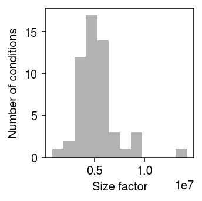
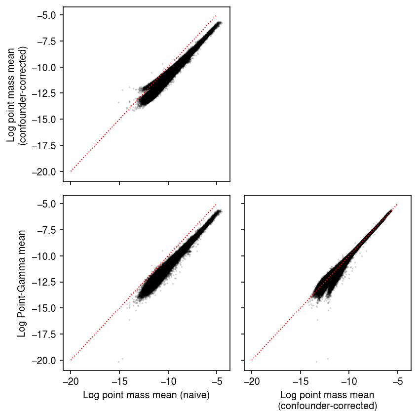
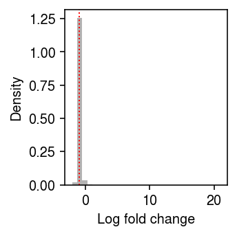
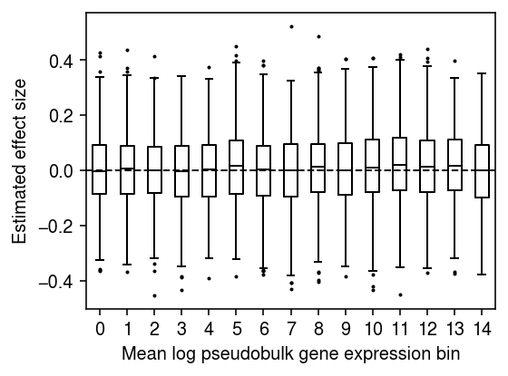
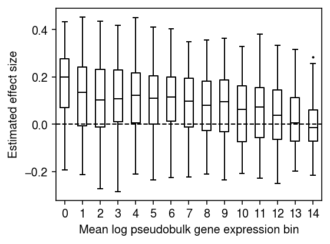
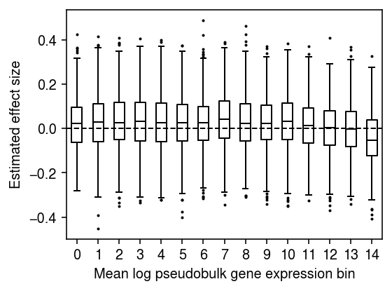
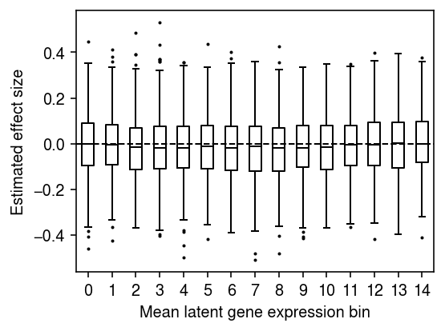
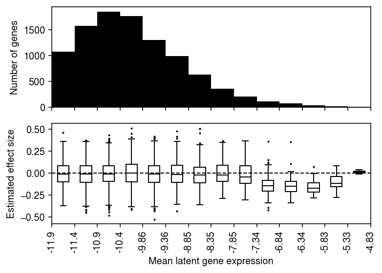
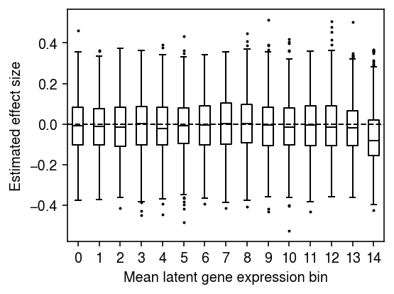
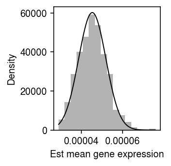

Alternative approaches to scRNA-seq pseudobulk models
Table of Contents
Introduction
One strategy for simplifying the analysis of scRNA-seq data is to construct pseudo-bulk data. If we have molecule counts generated using scRNA-seq for genes \(j = 1, \ldots, p\) measured in cells \(i = 1, \ldots, n\), belonging to \(m\) different groups denoted by indicator variables \(z_{ik}, k = 1, \ldots, m\), then this approach constructs new data \(y_{kj} = \sum_i x_{ij} z_{ik}\). The key idea of this approach is that the new data \(y_{kj}\) can be treated as bulk RNA-seq data in downstream analysis. This approach can be justified as the MLE of the model \( \DeclareMathOperator\Gam{Gamma} \DeclareMathOperator\Poi{Poisson} \DeclareMathOperator\argmin{arg min} \DeclareMathOperator\digamma{\psi} \DeclareMathOperator\trigamma{\psi^{(1)}} \newcommand\mf{\mathbf{F}} \newcommand\ml{\mathbf{L}} \newcommand\mx{\mathbf{X}} \newcommand\vb{\mathbf{b}} \newcommand\vc{\mathbf{c}} \newcommand\vl{\mathbf{l}} \newcommand\vmu{\boldsymbol{\mu}} \newcommand\vx{\mathbf{x}} \newcommand\xiplus{x_{i+}} \)
\begin{align} x_{ij} \mid \xiplus, \mu_{kj}, z_{ik} = 1 &\sim \Poi(\xiplus \mu_{kj})\\ \hat{\mu}_{kj} &= \frac{\sum_i x_{ij} z_{ik}}{\sum_i \xiplus z_{ik}}. \end{align}However, this approach has been observed (by Luis Barreiro’s lab) to lead to biases in regression and differential expression analyses, possibly due to widely varying size factors (total number of molecules observed). Here, we investigate this bias, and outline alternative procedures which are not biased by variation in size factors.
Setup
import anndata import numpy as np import mpebpm import pandas as pd import scipy.special as sp import scipy.sparse as ss import scipy.stats as st import sqlite3
%matplotlib inline %config InlineBackend.figure_formats = set(['retina'])
import matplotlib.pyplot as plt plt.rcParams['figure.facecolor'] = 'w' plt.rcParams['font.family'] = 'Nimbus Sans'
Method
We assume (Sarkar et al. 2019)
\begin{align*} x_{ij} \mid \xiplus, \lambda_{ij} &\sim \Poi(\xiplus \lambda_{ij})\\ \lambda_{ij} \mid \mu_{ij}, \phi_{ij}, \pi_{ij} &\sim \pi_{ij} \delta_0(\cdot) + (1 - \pi_{ij}) \Gam(\phi_{ij}^{-1}, \mu_{ij}^{-1} \phi_{ij}^{-1})\\ \ln \mu_{ij} &= (\ml \mf_\mu')_{ij}\\ \ln \phi_{ij} &= (\ml \mf_\phi')_{ij}\\ \operatorname{logit} \pi_{ij} &= (\ml \mf_\pi')_{ij}, \end{align*}where
- \(x_{ij}\) is the number of molecules of gene \(j = 1, \ldots, p\) observed in cell \(i = 1, \ldots, n\)
- \(\xiplus \triangleq \sum_j x_{ij}\) is the total number of molecules observed in sample \(i\)
- cells are taken from \(m\) conditions, \(\ml\) is \(n \times m\), and each \(\mf_{(\cdot)}\) is \(p \times m\)
- assignments of cells to conditions (loadings) \(l_{ik} \in \{0, 1\}, k = 1, \ldots, m\) are known and fixed.
Under this model, latent gene expression \(\lambda_{ij} \sim g_{ij}(\cdot)\), and e.g., the mean gene expression is
\[ E[\lambda_{ij} \mid \hat{g}] = (1 - \hat\pi_{ij}) \hat\mu_{ij}. \]
We fit the model by maximizing the likelihood using stochastic gradient descent.
Data
Read the iPSC data (Sarkar et al. 2019). We generated scRNA-seq data for 5,597 induced pluripotent stem cells derived from 54 donor individuals at 9,957 genes (after quality control) using the Fludigm C1 platform.
dat = anndata.read_h5ad('/project2/mstephens/aksarkar/projects/singlecell-ideas/data/ipsc/ipsc.h5ad')
Construct pseudobulk data.
y = pd.get_dummies(dat.obs['chip_id']).values.T @ dat.X
Plot the distribution of size factors for the pseudobulk data.
plt.clf() plt.gcf().set_size_inches(2.5, 2.5) plt.hist(y.sum(axis=1).ravel(), bins=12, color='0.7') plt.xlabel('Size factor') plt.ylabel('Number of conditions') plt.tight_layout()

Prepare the data for mpebpm.
s = dat.obs['mol_hs'].values.reshape(-1, 1) # Important: constructing this as a dense matrix will blow up memory for larger # data sets onehot = ss.coo_matrix((np.ones(dat.shape[0]), (np.arange(dat.shape[0]), pd.Categorical(dat.obs['chip_id']).codes))).tocsr() # Important: center the matrix of dummy variables (batch), because there is no # baseline design = ss.coo_matrix(pd.get_dummies(dat.obs['experiment'])).astype(float).A design -= design.mean(axis=0)
SKP1 was the top eQTL in this data (refer to the browser). Extract the genotypes at the top cis-SNP for this gene.
with sqlite3.connect('/project2/mstephens/aksarkar/projects/singlecell-qtl/browser/browser.db') as con: query = pd.read_sql('select ind, value from mean_qtl_geno, qtls where mean_qtl_geno.gene == qtls.gene and qtls.name == "SKP1";', con=con)
Results
Comparison of mean estimates under different expression models
As a preliminary investigation, compare estimates of the mean gene expression under different model assumptions. Pseudobulk approaches are justified as fitting a simple point mass expression model. However, in the iPSC data, there are cell-specific technical covariates \(\vc_i\) whose effect on each gene \(\vb_j\) needs to be estimated. This requires a (slightly) more sophisticated approach
\begin{equation} x_{ij} \mid \xiplus, \mu_j, \vc_i, \vb_j \sim \Poi(\xiplus \exp(\vc_i' \vb_j) \mu_j) \end{equation}log_mu0, bhat0 = mpebpm.sgd.ebpm_point( dat.X.A, s=s, onehot=onehot, design=design, batch_size=64, shuffle=True, lr=1e-2, num_epochs=40, log_dir=f'runs/mpebpm/ipsc/point/')
A point mass expression model is unlikely to be supported by the data. Our alternative assumes point-Gamma expression models, which are supported by empirical data (Sarkar et al. 2019, Sarkar and Stephens 2020). Read the previously fitted models.
log_mu1 = np.load('/scratch/midway2/aksarkar/ideas/mpebpm-ipsc-design-log-mu.npy') neg_log_phi1 = np.load('/scratch/midway2/aksarkar/ideas/mpebpm-ipsc-design-neg-log-phi.npy') logodds1 = np.load('/scratch/midway2/aksarkar/ideas/mpebpm-ipsc-design-logodds.npy') bhat1 = np.load('/scratch/midway2/aksarkar/ideas/mpebpm-ipsc-design-bhat.npy')
Compare different mean estimates against each other.
naive = np.delete((np.log(y + 1) - np.log(y.sum(axis=1, keepdims=True))), 1, axis=0) pois = np.delete(log_mu0, 1, axis=0) pg = -np.log1p(np.exp(logodds1)) + log_mu1 plt.clf() fig, ax = plt.subplots(2, 2, sharex=True, sharey=True) fig.set_size_inches(6, 6) ax[0,0].scatter(temp.ravel(), pois.ravel(), c='k', s=1, alpha=0.1) ax[0,0].set_ylabel('Log point mass mean\n(confounder-corrected)') ax[1,0].scatter(temp.ravel(), pg.ravel(), c='k', s=1, alpha=0.1) ax[1,0].set_xlabel('Log point mass mean (naive)') ax[1,0].set_ylabel('Log Point-Gamma mean') ax[1,1].scatter(pois.ravel(), pg.ravel(), c='k', s=1, alpha=0.1) ax[1,1].set_xlabel('Log point mass mean\n(confounder-corrected)') lim = [-20, -5] for a in ax.ravel(): if a is not ax[0,1]: a.plot(lim, lim, lw=1, ls=':', c='r') ax[0,1].set_axis_off() fig.tight_layout()

Compare different choices of pseudocount in the naive pseudobulk estimates.
pg = -np.log1p(np.exp(logodds1)) + log_mu1 plt.clf() fig, ax = plt.subplots(1, 3) fig.set_size_inches(7.5, 2.5) ax[0].scatter(np.delete((np.log(y + 1) - np.log(y.sum(axis=1, keepdims=True))), 1, axis=0).ravel(), pg.ravel() , c='k', s=1, alpha=0.1) ax[0].set_xlabel('$\ln((y+1)/s)$') ax[0].set_ylabel('Log Point-Gamma mean') ax[1].scatter(np.delete((np.log(y + 1e-4) - np.log(y.sum(axis=1, keepdims=True))), 1, axis=0).ravel(), pg.ravel(), c='k', s=1, alpha=0.1) ax[1].set_xlabel('$\ln((y+10^{-4})/s)$') ax[2].scatter(np.delete((np.log(y / y.sum(axis=1, keepdims=True) + 1)), 1, axis=0).ravel(), pg.ravel(), c='k', s=1, alpha=0.1) ax[2].set_xlabel('$\ln((y/s) + 1)$') lim = [-20, -5] for a in ax.ravel(): a.plot(lim, lim, lw=1, ls=':', c='r') fig.tight_layout()

Look at the distribution of relative differences between the naive estimate of the point mass, and the estimate accounting for the effect of technical covariates.
plt.clf() plt.gcf().set_size_inches(2.5, 2.5) plt.hist((pois - naive).ravel(), bins=30, color='0.7', density=True) plt.axvline(x=np.median(pois - naive), lw=1, ls=':', c='r') plt.xlabel('Log fold change') plt.ylabel('Density') plt.tight_layout()

Existing approach
Simulate a random Gaussian covariate, and fit a linear model regressing \(\ln(y_{kj} / y_{k+} + 1)\) against the (null) covariate.
rng = np.random.default_rng(1) log1p_y = np.log1p(y / y.sum(axis=1, keepdims=True)) m = log1p_y.mean(axis=0) log1p_y -= m log1p_y /= log1p_y.std(axis=0) n, p = log1p_y.shape x = rng.normal(size=n) x -= x.mean() x /= x.std() bhat = [] for j in range(p): b = x @ log1p_y[:,j] / (x.T @ x) bhat.append(b) bhat = np.array(bhat)
Plot the distribution of regression coefficients for equal-sized bins of genes, ranked by mean log pseudobulk gene expression.
n_bins = 15 temp = bhat[np.argsort(m)] plt.clf() plt.gcf().set_size_inches(4, 3) plt.boxplot(np.array_split(temp, 15), positions=range(15), widths=.5, flierprops={'markersize': 1}, medianprops={'color': 'k'}) plt.axhline(y=0, lw=1, ls='--', c='k') plt.xticks(np.arange(n_bins)) plt.xlabel('Mean log pseudobulk gene expression bin') plt.ylabel('Estimated effect size') plt.tight_layout()

Downsample the pseudobulk data to get more size factor variation. Generate a null covariate which is correlated with the size factor, and regress each gene against it.
rng = np.random.default_rng(1) prob = rng.beta(a=.2, b=.2, size=(n, 1)) ysub = rng.binomial(n=y.astype(int), p=prob).astype(float) log1p_ysub = np.log1p(ysub / ysub.sum(axis=1, keepdims=True)) m = log1p_ysub.mean(axis=0) log1p_ysub -= m log1p_ysub /= log1p_ysub.std(axis=0) x = prob.copy().ravel() x -= x.mean() x /= x.std() x += rng.normal(size=n) bhat = [] for j in range(log1p_ysub.shape[1]): b = x @ log1p_ysub[:,j] / (x.T @ x) bhat.append(b) bhat = np.array(bhat)
n_bins = 15 temp = bhat[np.argsort(m)] plt.clf() plt.gcf().set_size_inches(4, 3) plt.boxplot(np.array_split(temp, 15), positions=range(15), widths=.5, flierprops={'markersize': 1}, medianprops={'color': 'k'}) plt.axhline(y=0, lw=1, ls='--', c='k') plt.xticks(np.arange(n_bins)) plt.xlabel('Mean log pseudobulk gene expression bin') plt.ylabel('Estimated effect size') plt.tight_layout()

Repeat the analysis for the top cis-eQTL for SKP1.
design = query['value'] - query['value'].mean() design /= design.std() design.index = query['ind'] response = pd.DataFrame(log1p_y, index=dat.obs['chip_id'].unique(), columns=dat.var['name']) design, response = design.align(response, join='inner') bhat = [] for j in range(p): b = design @ response.iloc[:,j] / (design.T @ design) bhat.append(b) bhat = np.array(bhat)
n_bins = 15 temp = bhat[np.argsort(m)] plt.clf() plt.gcf().set_size_inches(4, 3) plt.boxplot(np.array_split(temp, 15), positions=range(15), widths=.5, flierprops={'markersize': 1}, medianprops={'color': 'k'}) plt.axhline(y=0, lw=1, ls='--', c='k') plt.xticks(np.arange(n_bins)) plt.xlabel('Mean log pseudobulk gene expression bin') plt.ylabel('Estimated effect size') plt.tight_layout()

One potential explanation for these results is that \(\ln(y_{kj} / y_{k+} + 1)\) is a biased estimator of \(\ln(\lambda_{kj} + 1)\), and the magnitude of the bias depends on the true gene expression \(\lambda_{kj}\) (Lun 2018)
\[ E[\ln(y_{kj} / y_{k+} + 1)] \approx E[\ln(\lambda_{kj} + 1)] - \frac{V[y_{kj} / y_{k+}]}{2 (\lambda_{kj} + 1)^2}. \]
Homoscedastic approach
Read the estimated model parameters.
log_mu = np.load('/scratch/midway2/aksarkar/ideas/mpebpm-ipsc-log-mu.npy') neg_log_phi = np.load('/scratch/midway2/aksarkar/ideas/mpebpm-ipsc-neg-log-phi.npy') logodds = np.load('/scratch/midway2/aksarkar/ideas/mpebpm-ipsc-logodds.npy')
Estimate the mean latent gene expression \(E[\lambda_{ij}] = (1 - \pi_{ij}) \mu_{ij}\).
m, p = log_mu.shape # Important: log(sigmoid(x)) = -softplus(-x) log_mean = -np.log1p(np.exp(-logodds)) + log_mu y = log_mean - log_mean.mean(axis=0) y /= y.std(axis=0)
Simulate a null covariate.
np.random.seed(1) x = np.random.normal(size=log_mean.shape[0]) x -= x.mean() x /= x.std()
For each gene, fit a linear model regressing mean latent gene expression in each individual against the covariate.
bhat = [] for j in range(p): b = x @ y[:,j] / (x.T @ x) bhat.append(b) bhat = np.array(bhat)
Plot the distribution of regression coefficients, binned by the mean latent gene expression over all cells. Assuming
\[ x_{ij} \mid \xiplus, \mu_j \sim \Poi(\xiplus \mu_j), \]
it is straightforward to show
\[ \hat{\mu_j} = \frac{\sum_i x_{ij}}{\sum_i \xiplus}. \]
global_log_mean = np.log(dat.X.sum(axis=0) / dat.X.sum()).ravel() grid = np.linspace(global_log_mean.min(), global_log_mean.max(), 15) bins = np.digitize(global_log_mean, grid).ravel()
plt.clf() fig, ax = plt.subplots(2, 1, sharex=True) fig.set_size_inches(5.5, 4) ax[0].bar(range(grid.shape[0] - 1), [(bins == i).sum() for i in range(1, grid.shape[0])], align='edge', width=1, color='k') ax[0].set_ylabel('Number of genes') for i in range(1, grid.shape[0]): ax[1].boxplot(bhat[bins == i], positions=[i - .5], widths=.5, flierprops={'markersize': 1}, medianprops={'color': 'k'}) ax[1].axhline(y=0, lw=1, ls='--', c='k') ax[1].set_xticks(np.arange(grid.shape[0])) ax[1].set_xticklabels([f'{g:.3g}' for g in grid], rotation=90) ax[1].set_xlabel('Mean latent gene expression') ax[1].set_ylabel('Estimated effect size') fig.tight_layout()
Plot the distribution of regression coefficients for equal-sized bins of genes, ranked by global mean latent gene expression.
n_bins = 15 temp = bhat[np.argsort(global_log_mean.A.ravel())] plt.clf() plt.gcf().set_size_inches(4, 3) plt.boxplot(np.array_split(temp, 15), positions=range(15), widths=.5, flierprops={'markersize': 1}, medianprops={'color': 'k'}) plt.axhline(y=0, lw=1, ls='--', c='k') plt.xticks(np.arange(n_bins)) plt.xlabel('Mean latent gene expression bin') plt.ylabel('Estimated effect size') fig.tight_layout()

For each gene, fit a linear model regressing mean latent gene expression on genotype at the cis-SNP.
design = query['value'] - query['value'].mean() design /= design.std() design.index = query['ind'] response = pd.DataFrame(y, index=dat.obs['chip_id'].unique(), columns=dat.var['name']) design, response = design.align(response, join='inner') bhat = [] for j in range(p): b = design @ response.iloc[:,j] / (design.T @ design) bhat.append(b) bhat = np.array(bhat)
plt.clf() fig, ax = plt.subplots(2, 1, sharex=True) fig.set_size_inches(5.5, 4) ax[0].bar(range(grid.shape[0] - 1), [(bins == i).sum() for i in range(1, grid.shape[0])], align='edge', width=1, color='k') ax[0].set_ylabel('Number of genes') for i in range(1, grid.shape[0]): ax[1].boxplot(bhat[bins == i], positions=[i - .5], widths=.5, flierprops={'markersize': 1}, medianprops={'color': 'k'}) ax[1].axhline(y=0, lw=1, ls='--', c='k') ax[1].set_xticks(np.arange(grid.shape[0])) ax[1].set_xticklabels([f'{g:.3g}' for g in grid], rotation=90) ax[1].set_xlabel('Mean latent gene expression') ax[1].set_ylabel('Estimated effect size') fig.tight_layout()

Report the global mean gene expression of SKP1 (marking which gene expression bin it fell into).
pd.Series(global_log_mean.A.ravel(), index=response.columns).loc['SKP1']
-6.9060464
After centering and scaling the data, the sampling variance of the regression coefficient should be \(1 / 53\). Compare the standard deviation of the estimated \(\hat{b_1}, \ldots, \hat{b_p}\) to this theoretical expectation.
pd.Series({
'theoretical': np.sqrt(1 / 53),
'empirical': bhat.std()
})
theoretical 0.137361 empirical 0.136828 dtype: float64
Plot the distribution of regression coefficients for equal-sized bins of genes, ranked by global mean latent gene expression.
n_bins = 15 temp = bhat[np.argsort(global_log_mean.A.ravel())] plt.clf() plt.gcf().set_size_inches(4, 3) plt.boxplot(np.array_split(temp, 15), positions=range(15), widths=.5, flierprops={'markersize': 1}, medianprops={'color': 'k'}) plt.axhline(y=0, lw=1, ls='--', c='k') plt.xticks(np.arange(n_bins)) plt.xlabel('Mean latent gene expression bin') plt.ylabel('Estimated effect size') fig.tight_layout()

Heteroscedastic approach
The motivation behind limma-voom (Law et al. 2014) is: (1) to use a transform \(\ln(y_{kj} / y_{k+} + \epsilon)\) as an estimate of the log of true gene expression, and (2) to produce an estimate of uncertainty for each observation. As discussed above, in scRNA-seq analysis, (1) is justified under a point mass expression model. To achieve (2), Law et al. 2014 use a non-parametric regression to predict \(V[\ln(y_{kj} / y_{k+} + \epsilon)]\) from \(\ln(y_{kj} / y_{k+} + \epsilon)\), because there is no information in bulk RNA-seq data which could be used to estimate a variance. However, that is no longer true for scRNA-seq data, for which there are (at least) two possibilities for a precision weight derived from fitted expression models:
- point mass: the standard error of the estimated mean
- (point-)Gamma: the estimated variance
Choice (1) is analytic:
\begin{align} \ell &\triangleq \sum_i \ln p(x_{ij} \mid \xiplus, \mu_j) = \sum_i x_{ij} \ln(\xiplus \mu_j) - \xiplus \mu_j + \mathrm{const}\\ \frac{\partial \ell}{\partial \mu_j} &= \sum_i \frac{x_{ij}}{\mu_j} - \xiplus\\ \frac{\partial^2 \ell}{\partial \mu_j^2} &= -\sum_i \frac{x_{ij}}{\mu_j^2}\\ \mathcal{I}(\mu_j) &= -E\left[\frac{\partial^2 \ell}{\partial \mu_j^2}\right] = \frac{E[\sum_i \xiplus]}{\mu_j^2} = \frac{\sum_i \xiplus}{\mu_j}\\ s_j^2 &= \frac{\mu_j}{\sum_i \xiplus}, \end{align}where we have used the fact that \(\sum_i x_{ij} \sim \Poi(\mu_j \sum_i \xiplus)\). The standard error remains unchanged even after introducing multiplicative effects for observed technical covariates. As a sanity check, the standard error decreases as the total sequencing depth increases, and increases as the estimated mean increases (consistent with higher variability in higher expressed genes). As an example, plot the bootstrap distribution of the estimated mean against the analytic SE for a simple simulation.
rng = np.random.default_rng(1) n_trials = 500 n = 100 s = 1e4 log_mu = -10 muhat = [] for i in range(n_trials): x = rng.poisson(s * np.exp(log_mu), size=n) muhat.append(x.sum() / (n * s)) muhat = np.array(muhat)
plt.clf() plt.gcf().set_size_inches(2.5, 2.5) plt.hist(muhat, bins=16, density=True, color='0.7') grid = np.linspace(muhat.min(), muhat.max(), 1000) plt.plot(grid, st.norm(loc=muhat.mean(), scale=np.sqrt(muhat[0] / (n * s))).pdf(grid), lw=1, c='k') plt.xlabel('Est mean gene expression') plt.ylabel('Density') plt.tight_layout()

Choice (2) is also analytic, e.g., assuming a Gamma expression model
\begin{align} \lambda_{ij} &\sim \Gam(\phi_j^{-1}, \mu_j^{-1} \phi_j^{-1})\\ E[\ln \lambda_{ij}] &= \digamma(\phi_j^{-1}) + \ln(\mu_j \phi_j)\\ V[\ln \lambda_{ij}] &= \trigamma(\phi_j^{-1}), \end{align}where the Gamma distribution is parameterized by shape and rate, \(\digamma(\cdot)\) denotes the digamma function, and \(\trigamma(\cdot)\) denotes the trigamma function. However, we previously noted that robustly estimating \(\phi_j\) is difficult, even from hundreds of cells per condition.